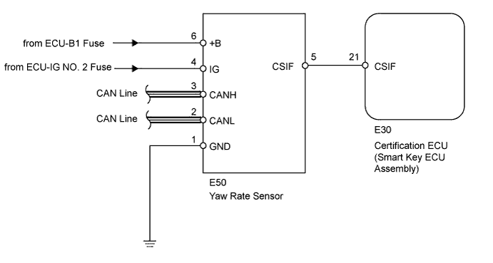
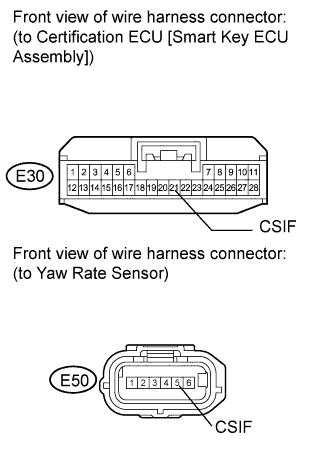

DTC B276A Short to GND in Tilt Sensor Signal Circuit |
| DTC Code | DTC Detection Condition | Trouble Area |
| B276A | After normal/trouble signal is output from the yaw rate sensor as result of self-diagnosis, the following malfunction is detected: Terminal CSIF of the yaw rate sensor has not received signal for 5 seconds or more |
|

| 1.CHECK HARNESS OR CONNECTOR (CERTIFICATION ECU [SMART KEY ECU ASSEMBLY] - YAW RATE SENSOR) |
 |
Disconnect the E30 ECU connector.
Disconnect the E50 sensor connector.
Measure the resistance according to the value(s) in the table below.
| Tester Connection | Condition | Specified Condition |
| E30-21 (CSIF) - E50-5 (CSIF) | Always | Below 1 Ω |
| E30-21 (CSIF) or E50-5 (CSIF) - Body ground | Always | 10 kΩ or higher |
|
| ||||
| OK | |
| 2.CHECK YAW RATE SENSOR (OPERATION) |
Temporarily replace the yaw rate sensor that has a tilt determining function with a new or normally functioning one (Click here).
Check that the system operates normally.
|
| ||||
| OK | ||
| ||